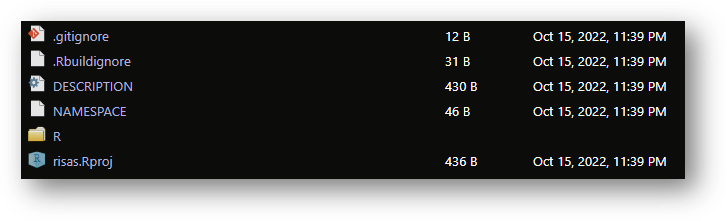
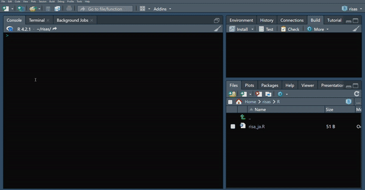
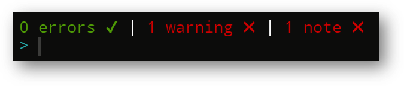
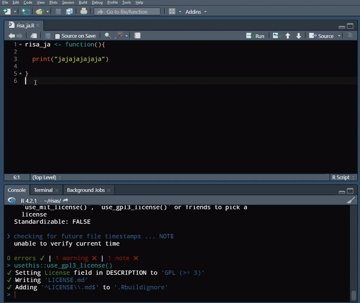
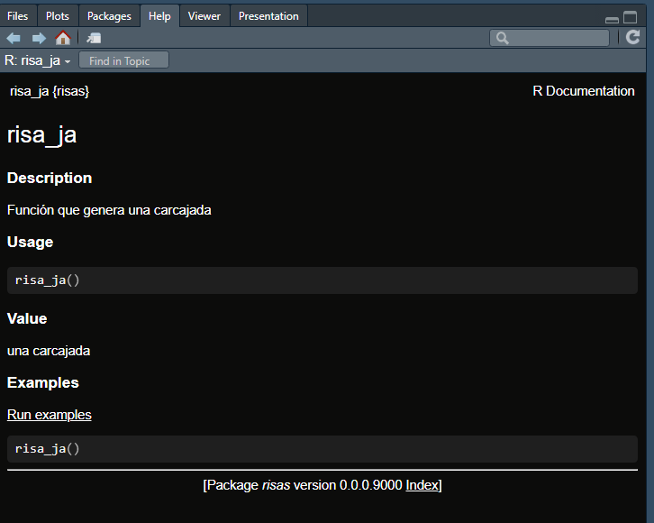
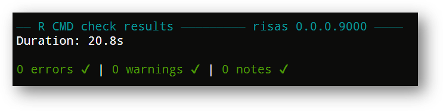
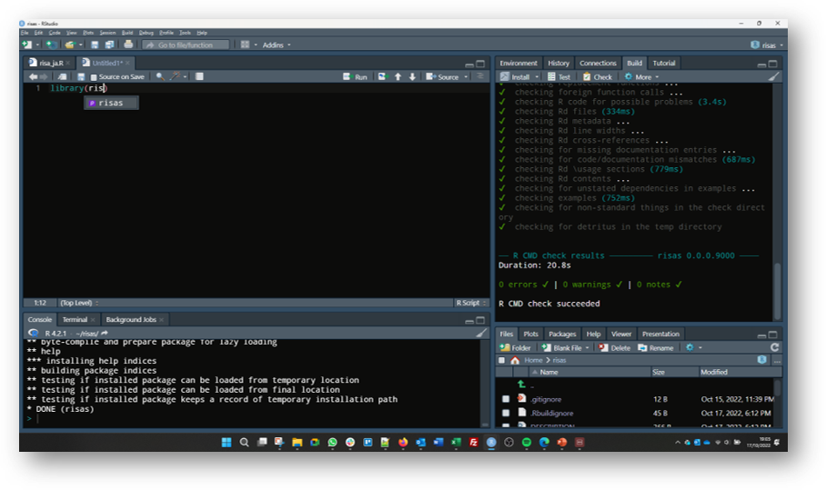

10 minutes
¡1, 2… paquete!
Si tenés más de 30 años (y vivís o viviste en Argentina) probablemente hayas conocido los postres 1,2, LISTO! Para quienes no lo conozcan, la idea era muy simple: En apenas dos pasos, como mucho tres, podías pasar de tener un sobre en la mano a un postre en una taza (¡y rico!). Los pasos, además, eran muy sencillos: Abrir el sobre, volcar el contenido en una taza, mezclar con leche y… ¡listo! a disfrutar.

Como en el postre, en este post voy a tratar de mostrar cómo en pocos pasos podemos pasar de tener un montón de funciones desperdigadas por despelotados scripts a un paquete de R que las contenga. Como se imaginarán, no serán dos (o tres), pero sí mostraré cómo se puede hacer de forma sencilla y efectiva, sin necesidad de entender todo lo que está pasando por detrás.
¿Por qué un paquete?
Podemos pensar al camino del o la programadora en R como aquel que (puede) transita(r) por las siguientes etapas, no necesariamente de forma ordenada ni sin caos, ansiedad, frustración pero también con aciertos y, cada tanto, algunas victorias:
-
La Era del script. Podemos considerarla como la instancia con la que nos incorporamos al lenguaje. En este punto nos encontramos escribiendo un sinfín de secuencias de código con mucha repetición, probablemente poca automatización, o con alguna más bien rústica y no sistemática.
-
La Era de la función. En nuestros scripts empezamos a necesitar no repetir tanto (porque lo hacemos mucho). Nos cuentan que existen las funciones, las vemos como algo maravilloso y al mismo tiempo doloroso de construir. Pero cuando le agarramos la mano no podemos parar.
-
La Era del paquete. Nos empezamos a cansar de ir a buscar funciones por proyectos mal organizados, hechos ad hoc para algo en particular y que ya no recordamos bien en qué carpeta lo dejamos, o siquiera si era ese el proyecto en el que habíamos escrito la función. Los paquetes ya eran algo que escuchábamos hablar, pero eso es para gente que trabaja en la NASA, no estamos a la altura.
Este post tiene como objetivo aquellas personas que están transitando la tercera etapa, por dos razones más que nada:
a. saben escribir funciones (rústicas, no sofisticadas, pero funciones al fin), y
b. necesitan armar un paquete
Bibliografía de referencia
Me voy a basar en la documentación R Packages (2e) cuyos autores son Jennifer Bryan y Hadley Wickham. Este libro está disponible y accesible de forma gratuita en internet. Está escrito sólo en inglés, pero en uno muy sencillo y ameno, fácil de digerir1.
Manos a la obra
Voy a mostrar los mínimos pasos necesarios para armar un paquete y para ello voy a… ¡armar un paquete! La idea es no quedarnos en lo expositivo, sino que se pueda replicar (y adaptar) el ejemplo. Para ello vamos a trabajar en Rstudio2, siendo de las plataformas más populares para escribir en R. La idea es simplemente abrir el programa y en un R script ir escribiendo el código necesario que iremos dejando a continuación. No es necesario que guardes este script, aunque puedes hacerlo para dejar asentado los pasos recorridos.
Librerías de trabajo
Para armar nuestro paquete necesitaremos de las siguientes librerías, las cuales nos van a proveer de funciones para facilitar el desarrollo del paquete.
library(devtools)
library(usethis)
Paso 1, crear el paquete. Lo primero que vamos a hacer es ponerle un nombre a nuestro paquete, el cual se llamara {risas}.
Luego vamos a crearlo con la siguiente función (asegúrate de poner la ruta que quieras para alojar el paquete en tu computadora):
usethis::create_package("risas")
Como resultado vas a poder ver que se te ha creado un proyecto nuevo con el nombre del paquete y una estructura de archivos como la de esta imagen:

la carpeta R va a contener el conjunto de funciones creadas.
DESCRIPTION provee la metadata (data sobre la data) del paquete
.Rbuildignore lista los archivos que vamos a necesitar pero que no se incluirán cuando armemos el paquete
risas.Rproj es el archivo del proyecto creado
.gitignore contiene aquellos archivos que no queremos que interactuen con Github3
NAMESPACE declara aquellas funciones que nuestro paquete declara para uso externo y aquellas funciones externas que nuestro paquete importa.
Paso 2, armar las funciones (o adaptar las que ya tenemos hechas). Aquí es donde debemos ir a buscar esas funciones que dieron la razón de ser del paquete. El destino de esas funciones es la carpeta R que se creo automáticamente al comienzo. En principio la idea es que tengamos un R script por cada función, luego podemos agrupar más de una por script, pero al principio es más prolijo e intuitivo arrancar por la primera versión.
La función que nos va a asistir en este paso es usethis::use_r("nombre_de_la_funcion") (en el paréntesis indicamos el nombre de la función). Al ejecutarla pasarán dos cosas: (1) se creará automáticamente el archivo .R, directo en la carpeta R y (2) se abrirá el mismo para ya definir el contenido de la función. Por ejemplo:
usethis::use_r("risa_ja")
Una vez en el R script, defino el contenido de la función (notar que el nombre del script y el nombre de la función son iguales) y guardo el archivo:
risa_ja <- function(){
print("jajajajajaja")
}
Paso 3, cargar y chequear. Una vez que definí mi función debo proceder a “cargarla” en el ambiente y luego correr nuestro primer chequeo para ver si está todo bien con lo que hicimos hasta el momento. Las funciones que nos asistirán en este paso son devtools::load_all() para cargar la o las funciones que creamos (es como correr un library() pero de un paquete que aún no esta instalado) y devtools::check() para el chequeo.
Al correr el check() deberíamos ver algo así:

Lo importante de este paso es revisar el último mensaje, que de salir todo bien debería figurar algo así:

Por suerte la explicación de estos tres bloques (errors, warning y note) es bastante intuitiva. Lo que más nos importa es que errors figure en cero. De no ser así es lo primero que deberíamos revisar. Por suerte, inmediatamente arriba de este último mensaje tenemos más pistas sobre qué es lo que encontró el check() como para que aparezca, por ejemplo, un 1 warning (en este caso, falta darle una licencia al paquete, cosa que haremos en los próximos pasos). Vale decir que aún con warnings y notes podemos avanzar, aunque no es lo recomendable.
Paso 4, darle una licencia al paquete. Aquí no profundizaremos mucho ya que el paso es bien sencillo y lo que puede tomar más tiempo es decidir por qué tipo de licencia optar. En nuestro caso vamos a ir por GPL-34
La función que debemos para cumplir con este paso es:
usethis::use_gpl3_license()
Con ella se creará un nuevo archivo en la carpeta del proyecto llamado LICENSE.md.
Paso 5, documentación del paquete. Esta es una de las razones por las cuales es buena idea hacer un paquete, la posibilidad de documentar; actividad cuya popularidad es inversamente proporcional a la importancia que tiene. ¿Por qué documentar? Puede haber varias respuestas, pero la más palpable puede ser que la documentación nos ahorra dolores de cabeza (a nosotros/as o a otros/as). Una función puede ser intuitiva para quien la diseña (o no!), pero al retomar su uso después de un tiempo podemos no tener claro cómo es que se usaba, los parámetros que tiene y el resultado que genera. Para ello es clave la documentación, porque es justamente eso lo que resolvemos, dejar en claro lo que hace una función y la forma de utilizarla para llegar a ese resultado.
Vale mencionar que debemos diferenciar entre documentar una función y documentar un paquete, van a ser dos pasos diferentes. Veamos el primero.
Documentar una función. Lo que vamos a hacer es lo siguiente: en el mismo R script donde definimos nuestra nueva función (risa_ja()) vamos a pararnos en la primera línea y dirigirnos a la ventana de Rstudio Code –> Insert Roxygen sckeleton:

Hecho esto, Rstudio automaticamente agregar al menos 6 líneas de código que servirán para documentar lo básico de nuestra función (nombre, descripción, parámetros -si los hay-, ejemplo de uso, eso al menos para empezar). En nuestro caso, debería quedar algo así:
#' risa_ja
#' @description Función que genera una carcajada
#' @return
#' @export
#'
#' @examples
#' risa_ja()
risa_ja <- function(){
print("jajajajajaja")
}
Spoiler alert
Al final del camino, cuando consultemos por la ayuda de la función deberíamos ver algo así: 
Una vez que completamos estos campos, corremos la función devtools::document(). Con ella se va a crear una carpeta llamada man en donde se irán listando archivos .md que contienen esta documentación que completamos, uno por cada función que tengamos en cada R.script.
devtools::document()
Por otro lado se va a actualizar el archivo que ya existía llamado NAMESPACE, donde se irán listando las funciones que creamos. Importante, no editar estos archivos a mano! esa tarea se la vamos a dejar al document().
Paso 6, chequear que esté todo bien e… instalar el paquete! (estamos cerca!). Nuevamente vamos a correr el devtools::check() (como habrás notado, es muy importante chequear), y revisar que con lo nuevo que hemos corrido estemos bien encaminados/as para lo que tan ansiadamente queremos hacer: instalar el paquete en nuestras computadoras!
Si todo sale bien, nuestro nuevo check() debería verse así:


Si todo no sale tan bien (alguna nota, error o advertencia), podemos revisar el capítulo R CMD check del libro y revisar qué puede estar pasando.
No demoremos más, antes de que alguien se arrepienta, instalemos nuestro paquete ejecutando la siguiente sentencia en nuestras consolas:
devtools::install()
Una vez hecho esto, nuestro paquete ya se encuentra instalado en la computadora y disponible para ser convocado vía el clásico library(). Y la mejor manera de comprobarlo es… probándolo!
Veamos cómo al comenzar a escribirlo en un library() Rstudio lo sugiere como autocompletado:

Éxito.
Hemos logrado sin grandes sobresaltos armar nuestro primer paquete. Esta es una guía mínima de cómo hacerlo, hay muuuuucho más al respecto. Si te interesa invito nuevamente a que pases por el libro R Packages (2e). Aunque en inglés, es de la mejor documentación para el armado de paquetes.
Va también, de forma resumida, cómo podrías seguir avanzando de cara a futuro:
-
Vincular este flujo de trabajo con GIT y Github. Esto te permitiría dejar disponible a tu nuevo paquete en un repositorio para que otras personas también puedan descargárselo. No incluí esto ya que la intención era concentrarnos en el armado de una versión mínima, esquivando la aventura que es adentrarse en Github (aventura más que recomendada por cierto!).
-
Armar tests de tus funciones. Esto ayuda a la robustez de tu desarrollo, comprobando de diferentes formas que tu función hace lo que se espera que haga (a veces las cosas funcionan pero no como uno quiere!). Probá jugar con
usethis::use_testthat(), luegousethis::use_test()para finalizar condevtools::test(), a ver qué pasa!. Acá te dejo la referencia en el libro que trata este tema -
¿Usas otros paquetes para armar tu función? Probá con
usethis::use_package()para dejar asentado esto en la estructura de tu desarrollo. Acá un poco más del tema -
¿Vas a sumar una nueva función? Este sería el ciclo a seguir en un paquete ya creado:
- Sumá la función con
usethis::use_r("nombre_de_la_funcion") - Documentá la función con el esqueleto de Roxygen
- Cargá el nuevo estado del paquete con
devtools::load_all() - Documentá en el paquete la nueva función con
devtools::document() - Chequeá que esté todo bien con
devtools::check() - Instalá la nueva versión de tu paquete con la nueva función! –>
devtools::install()
Eso es todo, espero que haya sido ameno y, sobre todo, ¡útil! Cualquier comentario o duda podés dejarlo por acá o escribirme por alguna de las redes sociales sin problema.
-
Ambos autores tienen una inclinación por poner el foco en la accesibilidad a la hora de transmitir conocimiento, cosa para nada despreciable en el mundo de la programación. ↩︎
-
Otro post sobre Github ya se encuentra en producción ↩︎
-
Más información sobre la licencia GPLv3, aquí: https://www.gnu.org/licenses/gpl-3.0.en.html ↩︎
rstats rstatES paquetes packages development desarrollo
rstatsES documentacion desarrollo de paquetes
2031 Words
2022-10-23 19:00